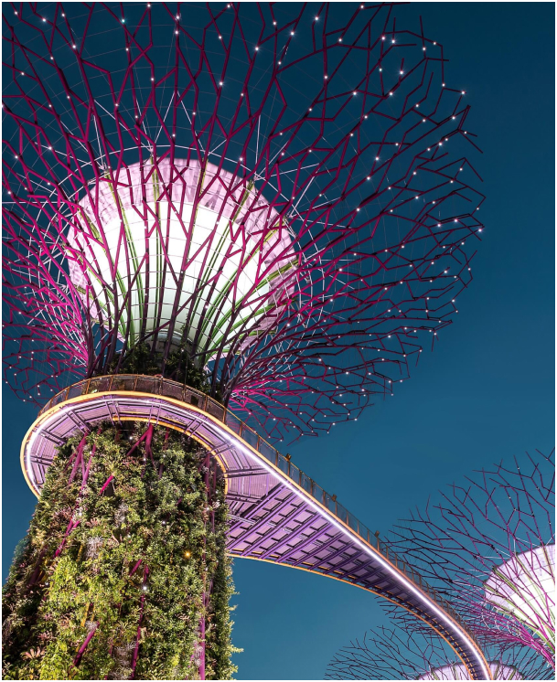
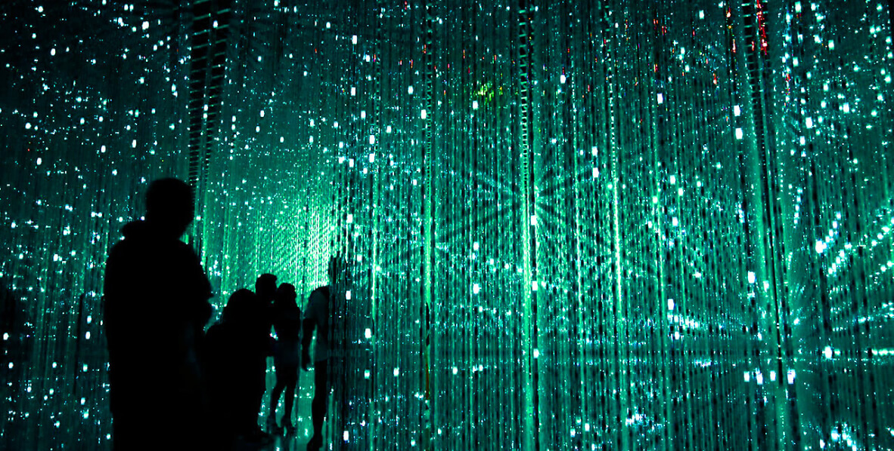
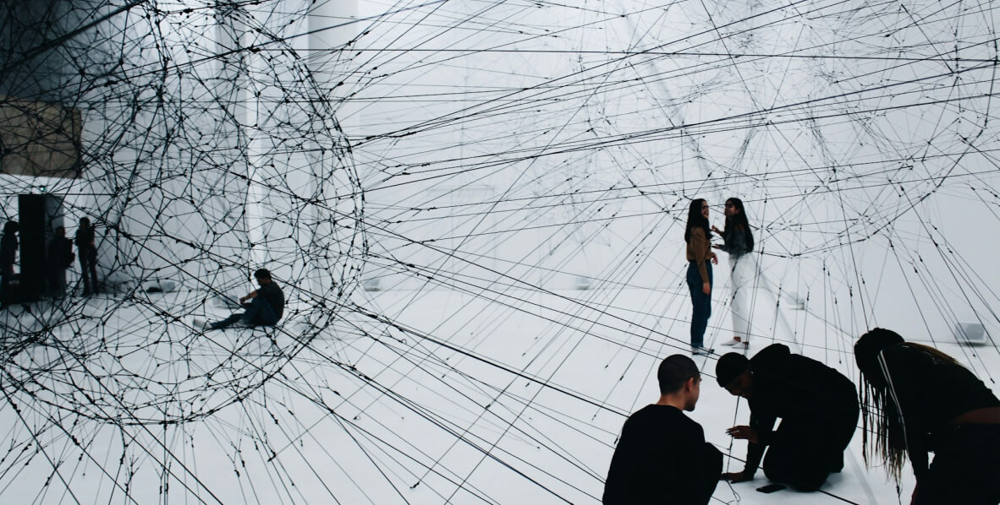

Planeta is a cutting-edge exhibition that celebrates the meeting between art and technology, offering a unique and multi-sensory experience.
New art Exhibition in Barcelona. Discover Planeta
arrow_downward
About
01
The name "Planeta" was chosen to reflect the idea of exploring new worlds and possibilities within the realm of art. The exhibition aimed to transport visitors to different dimensions of creativity, offering them a glimpse into the future of artistic innovation.
"Planeta" was founded in 2024 as a groundbreaking art exhibition in Barcelona. The concept behind Planeta emerged from a desire to explore the intersection of art and technology in a dynamic and immersive way. The founders recognized the increasing role of technology in shaping artistic expression and sought to create a platform where artists could experiment with cutting-edge tools and techniques to push the boundaries of traditional art forms.
star
100K
Reviews and Feedbacks
euro
2m+
Raised funds for artists
handshake
90+
Artists from all over the world
trophy
32
International trophies. Still counting
Current exhibitions
02
Explore the intricate relationship between humanity and the environment in a groundbreaking exhibition that showcases innovative artworks examining the intersections of nature, science, and digital technology.

16th
LEKMUS
Metropolis Redux
16th
LEKMUS
Metropolis Redux
21th
Shopie
dallamore
Metropolis Redux
21th
Shopie
dallamore
Metropolis Redux
In this groundbreaking exhibition, visitors are transported on a mesmerizing journey through the depths of human history and imagination. As they wander through immersive installations and thought-provoking artworks, they find themselves suspended in a space where past, present, and future converge in a symphony of sights, sounds, and emotions. Each artwork offers a glimpse into the elusive nature of eternity, leaving visitors awestruck and inspired by the boundless possibilities of the human spirit.
Planeta Blog
03
The Planeta blog serves as a dynamic hub for news, updates, and engaging content related to the intersection of art and technology. With a mission to inspire and inform visitors about the latest trends, events, and innovations in the digital art world, the blog offers a diverse range of articles, features, and interviews curated by a team of passionate writers and contributors.
At the heart of the Planeta blog is a commitment to fostering a vibrant community of artists, technologists, and art enthusiasts who share a common interest in exploring the limitless possibilities of digital creativity. Whether it's showcasing behind-the-scenes glimpses of upcoming exhibitions, highlighting emerging artists pushing the boundaries of their craft, or delving into thought-provoking discussions about the future of art in the digital age, the blog strives to spark curiosity, ignite inspiration, and foster meaningful connections among its readers.

20.02.2024
How Technology is Transforming Art
In an age where technology permeates every aspect of our lives, it's no surprise that the world of art is undergoing a digital revolution. From virtual reality masterpieces to AI-generated creations, artists are harnessing the power of technology to push the boundaries of creativity like never before.

16.02.2024
The Rise of Interactive Art Installations
Gone are the days of passive observation – today's art galleries are alive with interactive installations that invite audiences to become active participants in the creative process. In this article, we shine a spotlight on the burgeoning trend of interactive art, where technology serves as a gateway to immersive, multi-sensory experiences.